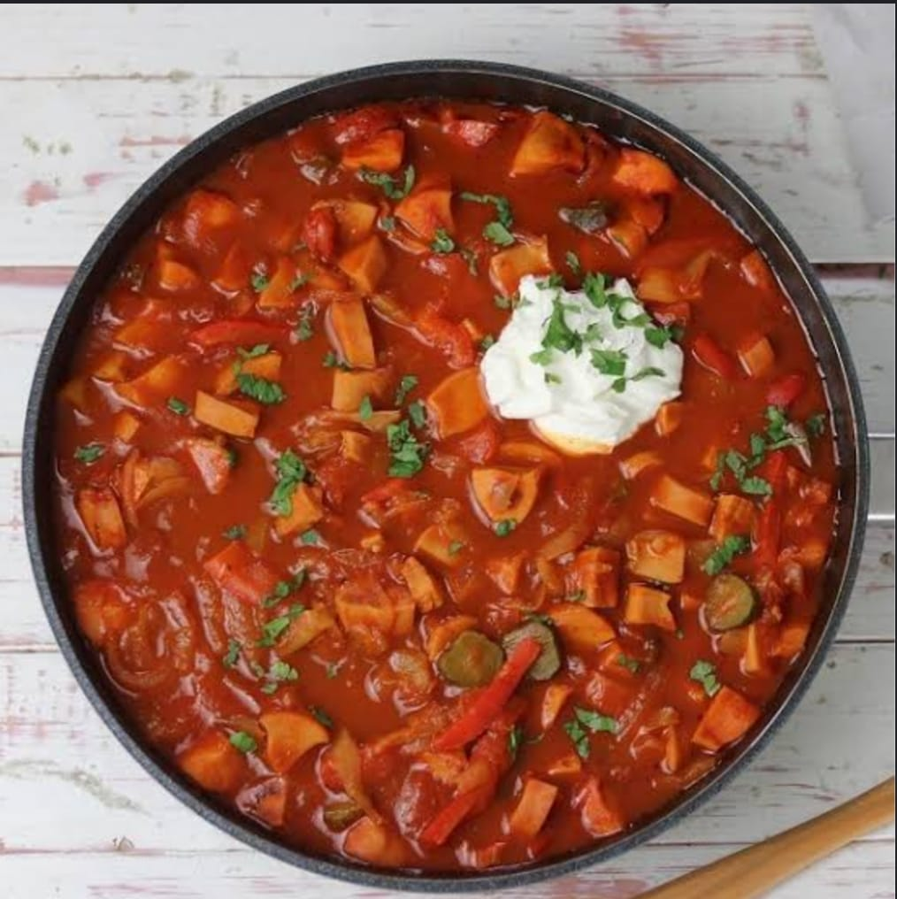

Como Fazer Soljanka:

Ingredientes para 1 panela
- 1- 300 g de coxão mole picado
- 2- 200 g de carne seca picada
- 3- 2 linguiças defumadas finas cortadas meio na diagonal para diferenciar da salsicha
- 4- 3 salsichas fatiadas
- 5- 4 colheres (sopa) de alcaparras
- 6- 200 g de creme azedo
- 7- 6 picles picados
- 8- 2 cebolas
- 9- 1 cenoura ralada em grandes pedaços
- 10- 2 folhas de louro
- 11- 1 tomate picado
- 12- 1/2 pacote de extrato de tomate
- 13- 4 colheres (sopa) de vodka
Passo a passo:
- 1- Coloque a carne com o cominho e as folhas de louro na panela de pressão e cubra com 3 a 4 dedos de água.
- 2- Deixe cozinhar na pressão por 5 minutos.
- 3- Fervente a carne seca 5 vezes para tirar o sal.
- 4- Fervente 2 vezes a salsicha.
- 5- Em uma panela coloque a cebola para dourar, junte a cenoura, o picles, o tomate e o molho de tomate e deixe cozer bem.
- 6- Abra a panela de pressão e adicione todas as carnes e a alcaparra e deixe por mais 5 minutos na pressão.
- 7- Junte o preparado das (cebolas, cenoura, picles e o tomate) em uma panela juntamente com todas as carnes.
- 8- Prove para ver o sal, adicione a gosto.
- 9- No prato sirva com a laranja e o sour cream (creme azedo).